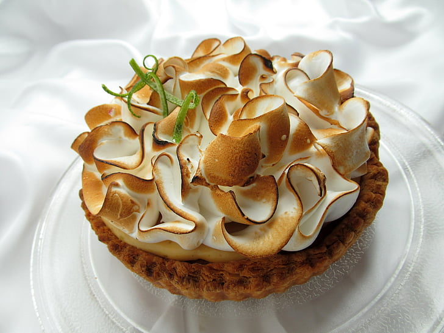

Home
Recette de la Tarte au citron

Description
La tarte au citron est un dessert classique français,
apprécié pour son équilibre parfait entre la douceur
de la pâte et l'acidité rafraîchissante du citron.
Elle est souvent garnie d'une meringue légère ou servie
nature.
Ingrédients
- 1 pâte sablée
- 4 citrons (zeste et jus)
- 200g de sucre
- 3 œufs
- 20cl de crème fraîche
- 1 cuillère à soupe de farine
- Une pincée de sel
Instructions
- Préchauffez le four à 180°C (350°F).
- Étalez la pâte sablée dans un moule à tarte et piquez le fond avec une fourchette.
Faites cuire à blanc pendant 15 minutes.
- Dans un bol, fouettez les œufs avec le sucre jusqu'à ce que le mélange blanchisse.
Ajoutez le zeste et le jus des citrons, la crème fraîche, la farine et une pincée de sel.
Mélangez bien.
- Versez la préparation au citron sur le fond de tarte précuit.
- Faites cuire au four pendant 25 à 30 minutes, jusqu'à ce que la garniture soit prise.
- Laissez refroidir avant de démouler et de servir. Bon appétit!